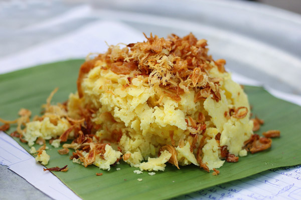

Phở

Phở là một món ăn truyền thống của Việt Nam, có nguồn gốc từ Hà Nội và Nam Định, và được xem là một trong những món ăn tiêu biểu cho nền ẩm thực Việt Nam.
Thành phần chính của phở là bánh phở và nước dùng (hay nước lèo theo cách gọi miền Nam) cùng với thịt bò hoặc thịt gà cắt lát mỏng. Ngoài ra còn kèm theo các gia vị như: tương, tiêu, chanh, nước mắm, ớt... Những gia vị này được thêm vào tùy theo khẩu vị của người dùng. Phở thông thường được dùng để làm món điểm tâm buổi sáng hoặc lót dạ buổi đêm; nhưng ở các thành phố lớn, món ăn này có thể được thưởng thức cả ngày. Tại các tỉnh phía Nam Việt Nam và một số vùng miền khác, phở được bày kèm với đĩa rau thơm như hành, giá và những lá cây rau mùi, rau húng, trong đó ngò gai là loại lá đặc trưng của phở; tuy nhiên tại Hà Nội thông thường sẽ không có đĩa rau sống này. Phở thường là phở bò hay phở gà, nhưng đôi khi cũng có những biến thể khác như phở sốt vang, phở trộn, phở xào,...
Nước dùng cho nồi phở thường là nước dùng trong được ninh từ xương bò (hoặc xương lợn), kèm theo nhiều loại gia vị bao gồm quế, hồi, gừng nướng, thảo quả, sá sùng, đinh hương, hạt mùi, hành khô nướng... Thịt dùng cho món phở là thịt bò (với đủ loại thịt bắp, nạm, gầu được làm tái hay chín hẳn) hoặc thịt gà (gà ta già luộc, xé thịt cho thịt ngọt đậm đà). "Bánh phở" theo truyền thống được làm từ bột gạo, tráng thành tấm mỏng rồi cắt thành sợi. Phở luôn được thưởng thức khi còn nóng hổi. Theo đó, để có một bát phở ngon và đậm vị, điều này còn phụ thuộc rất nhiều vào kĩ năng của người nấu, trong đó quan trọng nhất đó chính là nồi nước dùng.
Bún Chả
Bún chả là một món ăn của Việt Nam, bao gồm bún, chả thịt lợn nướng trên than hoa và bát nước mắm chua cay mặn ngọt. Món ăn xuất xứ từ miền Bắc Việt Nam, là thứ quà có sức sống lâu bền nhất của Hà Nội,[1] nên có thể coi đây là một trong những đặc sản đặc trưng của ẩm thực Hà thành. Bún chả có nét tương tự món bún thịt nướng ở miền Trung và miền Nam, nhưng nước mắm pha có vị thanh nhẹ hơn.
Bún Đậu Mắm Tôm
Bún đậu mắm tôm là món ăn đơn giản, dân dã trong ẩm thực miền Bắc Việt Nam. Đây là món thường được dùng như bữa ăn nhẹ, ăn chơi. Thành phần chính gồm có bún tươi, đậu hũ chiên vàng, chả cốm, nem chua, mắm tôm pha chanh, ớt và ăn kèm với các loại rau thơm như tía tô, kinh giới, rau húng, xà lách, cà pháo... Cũng như các món ăn dân gian khác, giá thành rẻ nên được nhiều người giới bình dân ăn nên thu nhập của những người buôn bán những món ăn này khá cao.
Xôi Xéo
Xôi xéo được thực hiện với nguyên liệu là đậu xanh đồ thật chín và hành mỡ phi thơm. Đậu xanh được chọn lựa loại bỏ hạt lép, hỏng, ngâm mềm, đãi vỏ, đồ chín đến độ tơi, bở. Đem đậu ra đánh thật tơi, thậm chí cho vào cối giã cho thật nhỏ mịn và nắm thành quả thật chặt trước khi đậu xanh bị nguội. Gạo nếp cũng ngâm vài tiếng đồng hồ, trộn chút muối và có thể trộn với chút bột dành dành, bột nghệ cho màu vàng đẹp, hấp chín. Hành củ tím thái mỏng đem phơi nắng cho hơi héo rồi cho vào chảo mỡ phi thơm vàng. Khi ăn cho xôi vào bát hay lá gói, lấy dao lạng mỏng từng lát xéo đậu xanh lên trên, rắc hành phi và rưới chút mỡ nước. Đây được coi là một trong những món xôi khó nấu ngon nhất tuy nguyên liệu đơn giản[21], dù các nguyên liệu đi kèm khá đơn giản.
Bánh Cuốn Thanh Trì
Bánh cuốn Thanh Trì là món ăn nổi tiếng của người Hà Nội, là đặc sản của phường Thanh Trì, quận Hoàng Mai, Hà Nội. Bánh được làm từ gạo gié cánh, tám thơm, tráng mỏng như tờ giấy. Bánh cuốn Thanh Trì không có nhân, thường được xếp thành từng lớp trong lòng một chiếc thúng, trên phủ tờ lá sen hay lá chuối, lá dong. Người bán bánh thường đội thúng bánh trên đầu, di dạo bán trên phố phường Hà Nội. Khi gặp người mua, người bán hàng sẽ hạ thúng xuống, lần giở từng lớp bánh cuốn mỏng, tách từng lớp bánh sao lá bánh cuốn khỏi bị rách. Trên mặt lá bánh cuốn điểm những cọng hành lá màu vàng, nâu đã được phi qua trên chảo. Mỗi lớp bánh cuốn đó sẽ được sắp xếp gọn lại trên đĩa, lần lượt từng miếng bánh một được đặt cạnh nhau. Sau đó, với một nhát kéo, tất cả các lá bánh cuốn được cắt đôi. Công việc tiếp theo là nhấc một nửa đầu bánh cuốn mới cắt đó, đặt lên trên nửa kia để người thưởng thức có thể nhìn thấy rõ từng lớp bánh cuốn tráng mỏng như giấy. Bánh được ăn với thứ nước chấm đặc trưng cho từng người bán bánh riêng, có thể ăn kèm chả quế, giò lụa hoặc đậu rán và rau mùi.